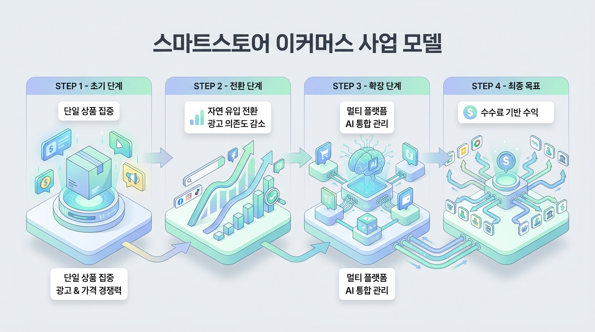

스마트스토어 기반
이커머스 사업 모델
1. 사업 개요 Overview

본 기획안은 네이버 스마트스토어를 기반으로 단일 상품 판매를 시작점으로 삼아, 초기에는 가격 경쟁력과 광고 운영을 통해 검색 노출 및 키워드 랭킹을 확보하고, 이후 자연 유입 중심의 수익 구조로 전환하는 이커머스 사업 모델을 제안하는 데 목적이 있다.
초기 단계에서는 하나의 상품에 집중하여 광고와 저마진 전략을 활용해 클릭률과 구매전환률을 높이고, 이를 기반으로 스마트스토어 내 검색 순위를 상승시켜 광고 의존도를 점차 낮추는 구조를 만든다. 이후 스마트스토어에서 검증된 상품을 중심으로 쿠팡, 11번가, G마켓 등 다양한 플랫폼으로 확장하며, 오픈클로 AI를 활용해 상품, 주문, 광고, 재고 운영을 통합 관리하고 최적화한다.
궁극적으로는 이러한 스마트스토어 기반 판매 파이프라인을 표준화하여 제3자에게 제공하고, 제3자가 실제 운영을 담당하는 구조를 구축함으로써 본사는 수수료 기반의 지속적인 수익을 확보하는 것을 최종 목표로 한다.
2. 시장 문제와 기회 Market

시장 문제
현재 이커머스 시장은 누구나 쉽게 판매를 시작할 수 있는 구조로 발전했지만, 실제로 안정적인 수익을 만들 수 있는 판매자는 제한적이다. 특히 스마트스토어는 진입 장벽이 낮은 반면, 판매자 간 가격 경쟁이 매우 심하고 검색 노출 구조에 대한 이해가 부족할 경우 상품을 등록해도 판매가 발생하지 않는 경우가 많다.
기회 포인트
초기 판매자 입장에서는 어떤 상품을 선정해야 하는지, 광고를 어떻게 집행해야 하는지, 어떤 방식으로 클릭률과 구매전환률을 높여야 하는지에 대한 실행 전략이 부족하다. 또한 멀티 플랫폼 운영이 중요해지고 있음에도 불구하고, 여러 플랫폼에 동일한 상품을 등록하고 재고, 주문, 가격, 광고를 각각 관리하는 것은 시간과 비용 측면에서 비효율적이다.
이러한 문제는 동시에 기회가 될 수 있다. 스마트스토어를 테스트베드로 활용하여 판매 가능성이 검증된 상품만 집중적으로 육성하고, 이를 기반으로 멀티 플랫폼 확장과 운영 자동화를 진행한다면 단순 판매를 넘어 시스템 기반의 사업 모델을 구축할 수 있다. 나아가 이 구조를 표준화하면 제3자에게도 동일한 판매 파이프라인을 제공할 수 있어, 단순 셀러를 넘어 플랫폼형 사업자로 확장할 수 있는 기회가 존재한다.
3. 초기 실행 전략 Execution

초기 실행 전략의 핵심은 여러 상품을 동시에 운영하는 방식이 아니라, 하나의 상품에 집중하여 빠르게 판매 데이터를 확보하고 검색 노출을 강화하는 데 있다. 단일 상품 집중 전략은 자원을 분산시키지 않고 특정 상품에 광고, 리뷰, 상세페이지, 가격 경쟁력을 집중할 수 있다는 장점이 있다.
초기에는 광고를 활용해 트래픽을 확보하고, 마진율을 낮추는 대신 가격 경쟁력을 높여 클릭률과 구매전환률을 끌어올리는 전략을 사용한다. 이 과정에서 핵심은 단순히 판매량을 늘리는 것이 아니라, 스마트스토어 알고리즘에 긍정적으로 작용할 수 있는 클릭률, 체류 시간, 구매전환률, 리뷰 수치를 확보하는 것이다.
즉, 초기 실행 전략은 “이익 극대화”보다 “노출 지표 확보와 랭킹 상승”에 목적이 있다. 이를 통해 메인 키워드 및 롱테일 키워드에서 검색 노출을 확보하고, 점차 광고에 의존하지 않는 자연 유입 구조로 전환할 수 있는 기반을 만든다.
4. 수익화 전략 Monetization

수익화 전략은 단기 수익보다 장기 수익 구조를 만드는 방향으로 설계된다. 초기에는 광고비와 낮은 마진을 감수하면서라도 검색 노출과 판매 데이터를 확보하는 것이 우선이며, 이를 통해 스마트스토어 내 상품 랭킹을 끌어올리는 것이 핵심 목표가 된다.
상품이 일정 수준 이상의 노출과 전환을 확보하게 되면 광고 효율이 높아지고, 이후에는 점진적으로 광고비를 줄이면서 자연 검색 및 반복 유입 비중을 높여 수익성을 개선할 수 있다. 즉, 초반에는 광고 기반 매출 구조를 만들고, 중장기적으로는 자연 유입 기반 수익 구조로 전환하는 방식이다.
또한 수익성 향상을 위해 단순 단품 판매 외에도 옵션 구성, 세트 판매, 묶음 상품, 업셀링 구조를 함께 설계할 수 있다. 이를 통해 초기에는 시장 점유와 랭킹 확보에 집중하고, 이후에는 객단가와 마진율을 높여 실질적인 순이익을 극대화하는 구조를 만드는 것이 본 전략의 핵심이다.
5. 확장 전략 Scale-up

스마트스토어에서 일정 수준 이상의 판매량, 리뷰, 전환율, 자연 유입이 검증된 상품은 이후 멀티 플랫폼 확장의 대상이 된다. 확장 대상 플랫폼으로는 쿠팡, 11번가, G마켓, 옥션 등이 있으며, 각 플랫폼의 특성에 맞는 판매 전략을 적용한다.
스마트스토어는 검색 노출과 상세페이지 설계가 중요한 채널이라면, 쿠팡은 빠른 구매 결정과 가격 경쟁력이 더 크게 작용하는 구조를 가진다. 따라서 동일 상품이라 하더라도 플랫폼 특성에 맞는 가격, 썸네일, 상세페이지, 운영 방식의 차별화가 필요하다.
중장기적으로는 외부 플랫폼 의존도를 낮추고 브랜드 자산을 확보하기 위해 자사몰 구축도 병행한다. 자사몰은 직접적인 고객 데이터 축적, 재구매 유도, 브랜드 운영 측면에서 중요한 역할을 하며, 스마트스토어와 오픈마켓이 유입 채널이라면 자사몰은 수익 최적화 채널로 기능하게 된다.
6. AI 운영 전략 AI Ops

멀티 플랫폼 운영 단계에서는 상품 수와 판매 채널이 늘어나면서 수작업 중심의 운영 방식으로는 효율을 유지하기 어렵다. 이에 따라 오픈클로 AI를 활용해 상품, 주문, 광고, 재고를 통합 관리하는 자동화 운영 전략이 필요하다.
AI 운영 전략의 핵심은 첫째, 상품 등록 및 수정 자동화이다. 여러 플랫폼에 동일한 상품을 등록하거나 가격 및 상세정보를 수정할 때 반복적인 업무를 자동화함으로써 운영 시간을 단축할 수 있다. 둘째, 주문 및 재고 통합 관리이다. 플랫폼별로 분산된 주문과 재고를 한 시스템 안에서 확인하고 연동함으로써 재고 오차나 누락 문제를 줄일 수 있다.
셋째, 데이터 기반 최적화 기능이다. 광고 성과, 판매량, 클릭률, 구매전환률 등을 분석하여 비효율적인 키워드나 상품을 빠르게 조정하고, 성과가 좋은 상품과 플랫폼에 자원을 집중할 수 있다. 결국 AI 운영 전략은 단순 편의성을 넘어, 운영 효율성과 확장 가능성을 동시에 높이는 핵심 수단이 된다.
7. 최종 사업모델 Business Model

최종 사업모델은 단순히 자사 상품을 판매하는 수준을 넘어, 검증된 판매 파이프라인 자체를 사업화하는 구조로 설계된다. 즉, 스마트스토어를 기반으로 구축한 상품 선정 방식, 초기 노출 확보 전략, 광고 운영 방식, 멀티 플랫폼 확장 구조, AI 자동화 운영 체계를 하나의 표준화된 시스템으로 만든다.
이후 이 시스템을 제3자에게 제공하여, 제3자가 실제 판매 운영을 담당하도록 하고 본사는 시스템 제공 및 운영 구조 설계를 통해 수익을 확보하는 형태로 확장한다. 이 구조에서는 스토어 세팅, 상품 소싱 가이드, 광고 운영 방식, AI 자동화 도구, 운영 매뉴얼 등이 패키지화된 서비스가 될 수 있다.
수익 모델은 초기 세팅 비용, 운영 컨설팅 비용, 월 구독형 관리 비용, 또는 매출 연동 수수료 방식 등으로 다양하게 설계할 수 있다. 궁극적으로는 “직접 판매해서 수익을 얻는 구조”를 넘어 “남이 판매하는 구조를 만들어주고 수수료를 얻는 구조”로 진화하는 것이 최종 사업모델의 핵심이다.
8. 기대효과 Impact

본 기획안이 실행될 경우, 초기에는 스마트스토어 내에서 빠르게 판매 데이터를 확보하고 검색 노출을 강화할 수 있다. 이를 통해 광고 효율을 높이고, 일정 시점 이후에는 자연 유입 기반의 안정적인 매출 구조를 확보할 수 있다.
또한 검증된 상품만을 중심으로 멀티 플랫폼 확장을 진행함으로써 실패 가능성을 줄이고, 동일 상품의 매출 채널을 다각화할 수 있다. 이는 특정 플랫폼에 대한 의존도를 낮추고 전체 매출 구조를 보다 안정적으로 만드는 데 도움이 된다.
AI 기반 운영 시스템 도입으로 인해 상품 수와 플랫폼 수가 증가하더라도 효율적인 관리가 가능해지며, 장기적으로는 이를 제3자에게 제공하는 시스템 사업으로 확장할 수 있다. 결과적으로 본 사업은 단순 상품 판매를 넘어 자동화된 운영 구조, 플랫폼 확장 구조, 수수료 기반의 지속 수익 구조를 동시에 확보할 수 있는 모델이 된다.
9. 리스크 대응 Risk

첫 번째 리스크는 초기 저마진 전략으로 인해 수익성이 낮아질 수 있다는 점이다. 이를 해결하기 위해 초기 단계에서는 랭킹 확보와 데이터 수집을 우선 목표로 설정하되, 일정 수준 이상의 자연 유입이 발생한 이후에는 가격 조정, 옵션 구성, 세트 판매 등을 통해 객단가와 마진율을 높이는 전략이 필요하다.
두 번째 리스크는 광고 효율이 기대 이하로 나올 수 있다는 점이다. 이 경우 광고 집행 데이터를 지속적으로 분석해 클릭률이 낮거나 전환이 발생하지 않는 키워드는 빠르게 제외하고, 성과가 좋은 광고 그룹에 예산을 집중하는 방식으로 대응해야 한다.
세 번째 리스크는 경쟁자의 가격 인하 및 유사 상품 진입이다. 이에 대해서는 단순 가격 경쟁만이 아니라 상세페이지 차별화, 리뷰 선점, 구성품 차별화, 브랜드화 요소 도입 등을 통해 경쟁 우위를 유지해야 한다.
네 번째 리스크는 멀티 플랫폼 확장 과정에서 운영 복잡도가 증가할 수 있다는 점이다. 이를 해결하기 위해 AI 기반 자동화 시스템을 조기에 도입하고, 플랫폼별 운영 매뉴얼을 표준화하여 관리 효율을 높여야 한다.
다섯 번째 리스크는 제3자 사업모델로 확장했을 때, 제3자의 실행력 부족이나 운영 실패로 인해 시스템 신뢰도가 저하될 수 있다는 점이다. 이를 방지하기 위해 제공 시스템의 구조를 최대한 단순화하고, 운영 매뉴얼 및 교육 체계를 함께 설계하며, 계약 구조와 수익 배분 기준을 명확하게 설정할 필요가 있다.